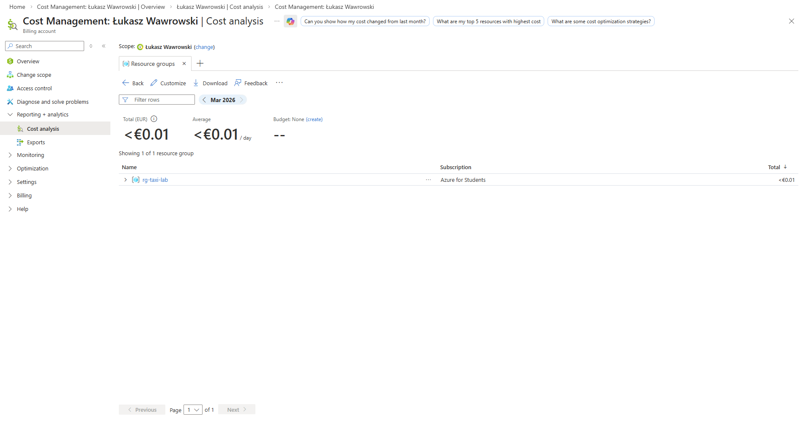

4 Azure Data Lake
Celem zajęć jest zapoznanie się z pracą na danych przechowywanych w chmurze zamiast lokalnych plików.
4.1 Wprowadzenie
Do tej pory pracowaliśmy na danych lokalnie:
data/yellow_tripdata_2025-01.parquetW rzeczywistych systemach dane są przechowywane w chmurze:
- Azure Data Lake
- AWS S3
- Google Cloud Storage
4.2 Co to jest Data Lake?
Data Lake to:
- miejsce przechowywania danych w różnych formatach (np. parquet, csv)
- brak sztywnego schematu (schema-on-read)
- możliwość pracy na dużych wolumenach danych
Możliwa struktura Data Lake
container/
├── raw/ # dane surowe
├── silver/ # dane przetworzone
└── gold/ # dane do analizy / dashboardów
4.3 Tworzenie Storage Account
- Wejdź na stronę https://portal.azure.com i zaloguj się na swoje konto.
- Utworzenie zasobu - wyszukaj
Storage accountsi kliknijCreate. - Konfiguracja
- Resource group:
rg-taxi-lab(lub utwórz nową) - Storage account name: unikalna nazwa (np.
taxilake12345) - Region: Europe (np. Europe Poland Central)
- Preferred storage type: Azure Blob Storage
- W zakładce
Advancedwłącz opcjęEnable hierarchical namespace - Utworzenie Data Lake: Kliknij
Review + Create → Createi poczekaj aż zasób zostanie utworzony.
4.4 Tworzenie kontenera i upload danych
- Przejdź do kontenerów w Storage Account -
Data storage → Containers. - Utwórz kontener - kliknij:
Containeri podaj nazwę np.taxi-data. - Utwórz strukturę folderów - wejdź do kontenera i utwórz foldery:
raw/
silver/
gold/- Wgraj dane - wejdź do folderu
rawi kliknijupload. Następnie wgraj plikyellow_tripdata_2025-01.parquet
4.5 Dostęp do danych (Access Key)
- W Storage Account przejdź do
Security + networking → Access keys - Skopiuj klucz
key1.
4.6 Python – odczyt danych
W pierwszym kroku potrzebujemy mieć zainstalowane następujące biblioteki:
pip install pandas pyarrow fsspec adlfsNastępnie możemy uruchomić kod:
import pandas as pd
account_name = "TWOJA_NAZWA_STORAGE"
account_key = "TWOJ_KLUCZ"
file_path = f"abfs://taxi-data@{account_name}.dfs.core.windows.net/raw/yellow_tripdata_2025-01.parquet"
df = pd.read_parquet(
file_path,
storage_options={
"account_name": account_name,
"account_key": account_key
}
)
df.head()4.7 Podstawowa analiza danych
Wykonaj poniższe operacje:
# liczba rekordów
df.shape
# średni dystans
df["trip_distance"].mean()
# najpopularniejsze godziny
df["tpep_pickup_datetime"] = pd.to_datetime(df["tpep_pickup_datetime"])
df["hour"] = df["tpep_pickup_datetime"].dt.hour
df["hour"].value_counts().head()4.7.1 Zadanie
Przetwórz dane i zapisz je w strefie silver.
- Wczytaj dane z
raw - Usuń rekordy gdzie
trip_distance <= 0 - Zapisz dane do
silver/cleaned.parquet
4.7.2 Zadanie
- Oblicz średnią długość przejazdu na godzinę
- Zapisz wynik do
gold/hour_aggregated.parquet
4.8 Dostęp do danych (SAS token)
Access Key:
- daje pełny dostęp do całego konta
- jest niebezpieczny w projektach
SAS (Shared Access Signature):
- daje ograniczony dostęp
- może wygasnąć
- może mieć tylko read/write
Tworzenie SAS token:
- W Azure przejdź do
Storage Account → Containers → taxilake12345 - Następnie
Security + networking → Shared access signature - Zaznacz niezbędne uprawnienia i określ czas ważności
- Wygeneruj token
Wczytanie danych z SAS token w python:
import pandas as pd
account_name = "TWOJA_NAZWA_STORAGE"
sas_token = "TWOJ_SAS_TOKEN"
file_path = f"abfs://taxi-data@{account_name}.dfs.core.windows.net/raw/yellow_tripdata_2025-01.parquet"
df = pd.read_parquet(
file_path,
storage_options={
"account_name": account_name,
"sas_token": sas_token
}
)
df.head()4.8.1 Zadanie
Co się stanie jeśli spróbujemy zapisać plik z wykorzystaniem SAS token bez wymaganych uprawnień?
4.9 Zarządzenie plikami z poziomu kodu
Usuwanie plików
from adlfs import AzureBlobFileSystem
account_name = "TWOJA_NAZWA"
account_key = "TWOJ_KEY"
fs = AzureBlobFileSystem(
account_name=account_name,
account_key=account_key
)
# ścieżka: container + path
file_path = "taxi-data/silver/cleaned.parquet"
fs.rm(file_path)
print("Plik usunięty")Usuwanie folderu
fs.rm("taxi-data/silver", recursive=True)Sprawdzanie co jest w folderze
fs.ls("taxi-data/raw")4.9.1 Zadanie
Stwórz katalog archive i przenieś tam plik silver/cleaned.parquet.
4.10 Analiza kosztów
W Azure płacimy za:
- Przechowywanie danych (GB / miesiąc)
- Operacje (read / write)
- Transfer danych (egress)

- Parquet = mniej danych = niższe koszty
- wiele małych operacji = drożej
- Data Lake jest generalnie tani, ale nie „za darmo”
Rozwiązania self-hosted: MinIO, Ceph, HDFS.